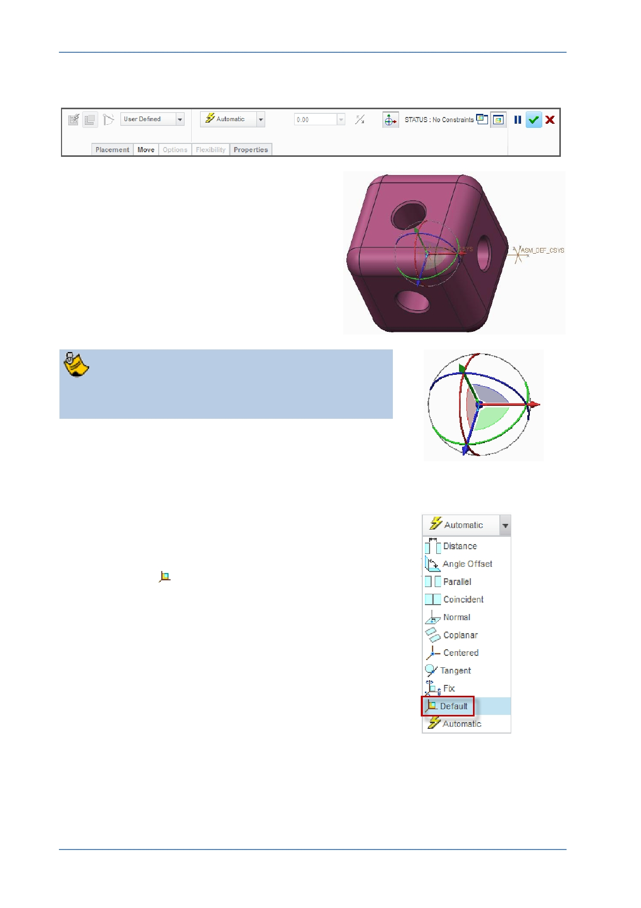

PTC Academic Program
The part will be attached to the cursor and the Assembly dashboard will open.
2. Locating the part temporarily, before final
placement:
Move the cursor to position the corner
cube just to the left of the assembly
coordinate system, then click in the
graphics area to place it temporarily.
At the center of the corner cube, you will see the
3D Dragger .
Later, when placing components, you will use the 3D Dragger to position the component
close to its final destination.
3. Adding assembly constraints:
In the Assembly dashboard, click Automatic
and select
Default from the drop-down
menu.
© 2012 PTC
Creo Parametric 2.0 Primer
Page 67